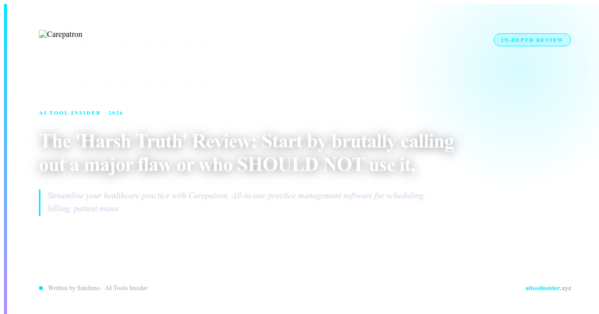

STOP. DO NOT BUY CAREPATRON IF...
Before you click that affiliate link, I need to tell you something the marketing won't: Carepatron is not for everyone. In fact, if you fit any of these profiles, close this tab right now and look elsewhere.
Do NOT buy Carepatron if:
- You run a large clinic with 20+ providers: The enterprise features aren't there. You'll outgrow this in 6 months.
- You need sophisticated billing with insurance claims: The billing module is basic. One reviewer called it "super basic beta feel." That's not wrong.
- You want polished, mature software: There are bugs. Video sessions glitch. Client charts feel unfinished. The company is fast at fixing issues, but they're still ironing things out.
- You need 24/7 support with dedicated account managers: Their support is responsive — they reply to 75% of negative reviews within 2 weeks — but it's not premium enterprise support.
If any of those describe your practice, walk away. This tool will frustrate you. But if you're still reading, here's why Carepatron might be the best decision you make this year.
Try Carepatron Free →THE HIDDEN TRUTH ABOUT CAREPATRON
Here's what nobody tells you: Carepatron isn't trying to be enterprise software. It's solving a different problem entirely.
It's built for the solo practitioner, the independent therapist, the coach running a private practice from a home office. It's for the professional who can't afford $500/month for an EHR system but needs something better than a Google Calendar and Excel spreadsheet.
One Capterra reviewer put it perfectly: "I love the clinical management features and the ease of use, you can tell it's been thought about by clinicians and it's great for solo practice."
That's the key phrase: "thought about by clinicians." This isn't software built by engineers who never saw a patient. It's built by people who've actually done the job. And that shows.
I love the clinical management features and the ease of use, you can tell it's been thought about by clinicians and it's great for solo practice. — Capterra reviewer
WHAT YOU ACTUALLY GET FOR FREE
Let's talk about the pricing because this is where Carepatron embarrasses the competition.
The Free tier gives you:
- Unlimited clients — not capped, not tiered. Whatever your practice size, you can handle it.
- Basic telehealth — video sessions built into the platform
- AI note-taking — automated clinical notes during sessions
- Appointment scheduling — calendar management included
- Client portal — where patients can book and access their records
Try finding all that in one platform for $0/month elsewhere. You won't. That's the actual value proposition — not flashy features, but actual utility that saves you hours every week.
One Pabau review noted: "Unlimited clients, basic telehealth, and AI note-taking at $0/month is a solid starting point. It's simple, low-commitment, and gets the job."
See Current Pricing for Carepatron →WHO CAREPATRON IS ACTUALLY FOR
Let me be specific about who should be using this:
- Solo therapists and mental health providers: The clinical notes, intake forms, and telehealth are built exactly for your workflow
- Private practice coaches and consultants: Need to track client sessions, send invoices, manage appointments — done
- Small wellness practices (1-3 people): You need more than a calendar but less than an enterprise EHR
- Starting out fresh: Building your practice from zero? The free tier lets you launch without spending a cent
If that sounds like you, keep reading. If it doesn't, I've already told you to leave.
THE REAL CONS — NO SHAMING
I've already mentioned these, but let's be thorough:
- Video glitches exist: Some users report issues with video sessions. The company fixes them fast, but they're not perfect.
- Billing is basic: If you need insurance claim processing, look elsewhere. Carepatron handles invoicing, not complex billing.
- Some UI roughness: The client charts have that "beta" feel reviewers mention. It's functional but not polished.
- Learning curve exists: While user-friendly, there's still a setup process to get everything configured.
But here's the thing: every single negative review mentions the company is responsive. One Capterra reviewer noted: "There are some bugs and issues with the system but they are manageable and the company seem to work very quickly to solve any issues."
That's the difference. They ship fast and fix fast. You can live with some bugs when the team actually listens.
THE BOTTOM LINE
Carepatron is not perfect. It will never be enterprise software. It has bugs and rough edges. If you need polished, if you need insurance billing, if you need a dedicated support team — go somewhere else.
But if you're a solo practitioner, a small therapist, a coach building a private practice — you just found your platform. The Free tier gives you everything you need to run your practice. The AI note-taking alone saves hours every week. The client portal handles bookings without you lifting a finger.
Most platforms charge $100+/month for less. Carepatron gives you more for free. The choice for the right user is obvious.
Claim Your Carepatron Deal →